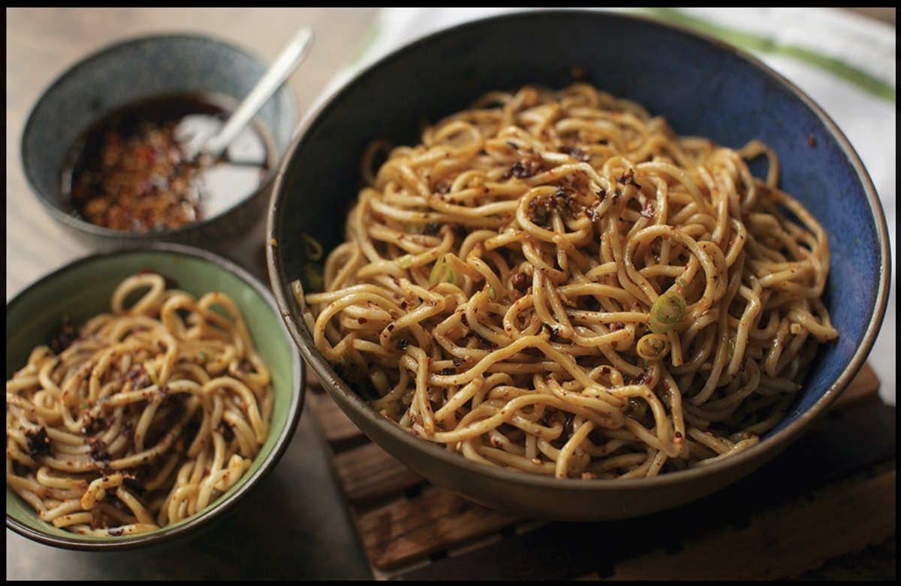

SICHUAN-STYLE COLD NOODLES
|
Yield Serves 4 |
Active Time 15 minutes Total Time 15 minutes |
The noodles and sauce can be prepared ahead and stored in separate sealed containers in the fridge for up to 3 days. If you plan on serving these noodles to folks with varying levels of heat tolerance, leave the chiles out of the aromatic oil and serve the noodles with a small bowl of homemade or store-bought chile oil on the side to adjust heat level to taste. You can add a couple of tablespoons of Chinese sesame paste (see here) to the sauce if you’d like, which transforms it into a sauce known as guai wei, or “strange flavor.”
INGREDIENTS
For the Noodles:
Kosher salt
1 pound (450 g) fresh wheat noodles
A little peanut, rice bran, or other neutral oil
For the Dressing:
2 teaspoons (3 g) Sichuan peppercorns
2 medium garlic cloves (5 g)
One ¼-inch segment fresh ginger, peeled
Kosher salt
4 scallions, thinly sliced
1 teaspoon (3 g) dried hot chile flakes, such as Sichuan er jing tiao or Korean gochugaru
1 star anise pod
¼ cup (60 ml) peanut, rice bran, or other neutral oil
3 tablespoons (45 ml) light soy sauce, plus more to taste
2 tablespoons (15 ml) Chinkiang, black, or rice vinegar, plus more to taste
1 tablespoon (15 ml) water
2 teaspoons (8 g) sugar
2 tablespoons Chinese sesame paste (see Notes)
Chile oil, for serving
Right around 2016 to 2018, it seemed like Adri and I would attend a potluck baby shower or toddler’s birthday party every other weekend. I got excited every time I saw my friend Jimmy Sun would be there. Not because he’s a swell guy who everyone should be excited to be around (he is), but because I knew he’d be bringing his cold noodle salad. That was Jimmy’s move, and it was a good one. He’d bring the noodles (which he’d precooked and air-dried) in a covered bowl, along with two jars: one filled with chile oil (he used Lao Gan Ma Spicy Chili Crisp), and the other with a premixed dressing, dark with black vinegar with a slick of fragrant oil floating on top. Once at the party, he’d toss the noodles with the dressing and set it on the table, leaving the jar of chile sauce on the side for guests to add to taste. Those noodles would inevitably be the first thing to go. (At really good parties, he’d have a backup batch in a bag hidden under the table.)
These noodles, which Jimmy learned how to make from his mother, Lucia Huang, are his family’s version of liang miàn (cold noodles), a dish that has as many variations as there are street vendors and home cooks in his parents’ native Sichuan. The basics are typically the same: make a quick dressing by infusing either oil or water with aromatics like chiles, Sichuan peppercorn, star anise, garlic, ginger, and scallions, then toss cooked and chilled noodles with that aromatic liquid, black vinegar, and soy sauce.
When using the water-based approach, you’d heat the aromatics in boiling water and let them steep like tea before straining and using the infused water as the base for the dressing. With the oil-infusion approach, you follow a process identical to the Soy and Fragrant Oil Dipping Sauce on here: combine your aromatics in a heatproof bowl, then pour the hot oil over them before adding your remaining ingredients. I much prefer the hot oil approach, as the high temperature that the oil can achieve will toast the spices, giving the finished dish a more intense aroma.
If making this dish ahead of time, make sure to store the noodles and the dressing in separate sealed containers in the fridge to avoid a scandal.
DIRECTIONS
1 Bring a large pot or wokful of salted water to a boil. Add the noodles, stir with chopsticks to separate them, and cook according to the package directions until the noodles are just cooked through and retain a springy bite (typically about 90 seconds). Drain the noodles through a fine-mesh strainer, chill with cold running water, and toss with a couple teaspoons of oil to prevent sticking—or for, better results, chill by using the air-drying method explained on here. Set aside.

2 For the Dressing: Grind the Sichuan peppercorns to a powder in a mortar and pestle. Add the garlic, ginger, and a pinch of salt and pound into a paste. Add the scallions (reserving some for garnish) along with the chiles and star anise (if using; see Notes) and stir with a fork or chopsticks to combine.
3 Heat the oil in a wok or small skillet until smoking-hot, then pour directly on top of the garlic/ginger/scallion mixture. Stir immediately with chopsticks or a fork. It should sizzle rapidly and release a very nice aroma. Stir in the soy sauce, vinegar, water, and sugar until dissolved.
4 When ready to serve, combine the noodles and sauce in a serving bowl, toss to combine, and season with more soy sauce and vinegar to taste if desired. Garnish with the reserved scallions and serve immediately with chile oil on the side
Why My Fridge Is Never without Shirataki Noodles
I’m just about the furthest thing you’ll find from a health nut. My general philosophy on healthy eating is this: we all know what crap is; don’t eat too much of it. My doctor seems to think it’s working alright for me thus far. I’m prefacing this sidebar this way because, for better or worse, shirataki noodles—those slick, slippery, yam starch noodles you find next to the tofu at your supermarket—have a reputation as a low-calorie health food. But that’s not what this sidebar is about, and it’s certainly not why I keep a few packages of shirataki in my fridge at all times.
I’d eaten shirataki or similar yam noodles before, but it wasn’t until recently that I started noticing pouches of them suspended in water at American supermarkets. Admittedly, my first reaction to seeing them in the refrigerated display case was Oh man, here we go. Another “health” food. But despite garish packaging and large starbursts filled with “Zero Calorie!” and “Gluten-free!” claims, what’s inside those bags is pretty much identical to the traditional Japanese preparation. Shirataki (or ito konnyaku) can vary in appearance and texture depending on where you are in Japan, but all are made with glucomannan starch extracted from devil’s tongue yams. It’s an indigestible dietary fiber that basically passes straight through you, giving you a noodle with zero net calories and zero net carbs.
Does that talk of carbs and dietary fiber and calories make your eyes glaze over? Yeah, I feel the same way. If you eat shirataki noodles as a diet food, more power to you. But the real reason I love them (and perhaps the reason you should too) is their texture, and that’s really all we need to talk about when it comes to shirataki. They are virtually flavorless on their own, which means that they are superb for picking up the flavors of whatever sauce they’re in. Texture-wise, they’re slippery and slick, sort of like a cross between spaghetti and Jell-O, and it’s this texture that makes them such a joy to eat.
Because shirataki are so mild in flavor and so light in texture, you can really gorge yourself on a bowl of them, sopping up all that flavorful sauce without feeling like you just ate an entire six-pack of hot pockets like you used to be able to in college. With wheat noodles, my body says “uncle” long before my mouth and my tongue do. With shirataki noodles, they’re on relatively even footing.
Then, of course, there’s the convenience aspect. Aside from a bit of draining and rinsing, shirataki noodles require no preparation at all. Drain, rinse, dress, and you’re ready to eat. It takes longer for me just to heat up a pot of water to cook wheat noodles than it does for me to prepare a cold shirataki noodle salad from start to finish. For pure convenience-to-flavor ratio, that’s pretty darn tough to beat.
Shirataki are equally delicious and convenient in hot preparations. Have you ever been tempted to cook, say, fresh ramen noodles directly in the pot of hot broth on your stove? There’s a good reason not to do this: wheat noodles shed a ton of starch as they cook, severely altering the texture of your broth, which can turn it thick and gummy. With shirataki noodles, cooking directly in the hot soup you’re going to serve them with is not just possible but actually better, infusing more flavor into the noodles and saving you from having to heat up a separate pot of water. Just pour your broth into a saucepan or wok, add your rinsed noodles, and heat everything up together on the stovetop.
I know that some of you aren’t going to be convinced here. Slippery is a common texture in many East Asian foods, but not necessarily one that is familiar or comforting to the Western palate. For those of you who can’t get past slippery noodles, I’m afraid I can’t help you. But for the rest of you who, like me, have been vaguely wary of shirataki noodles and all that they imply, I strongly urge you to put those fears aside just long enough to try a bowl. This spicy shirataki noodle and cucumber salad is a pretty good place to start.